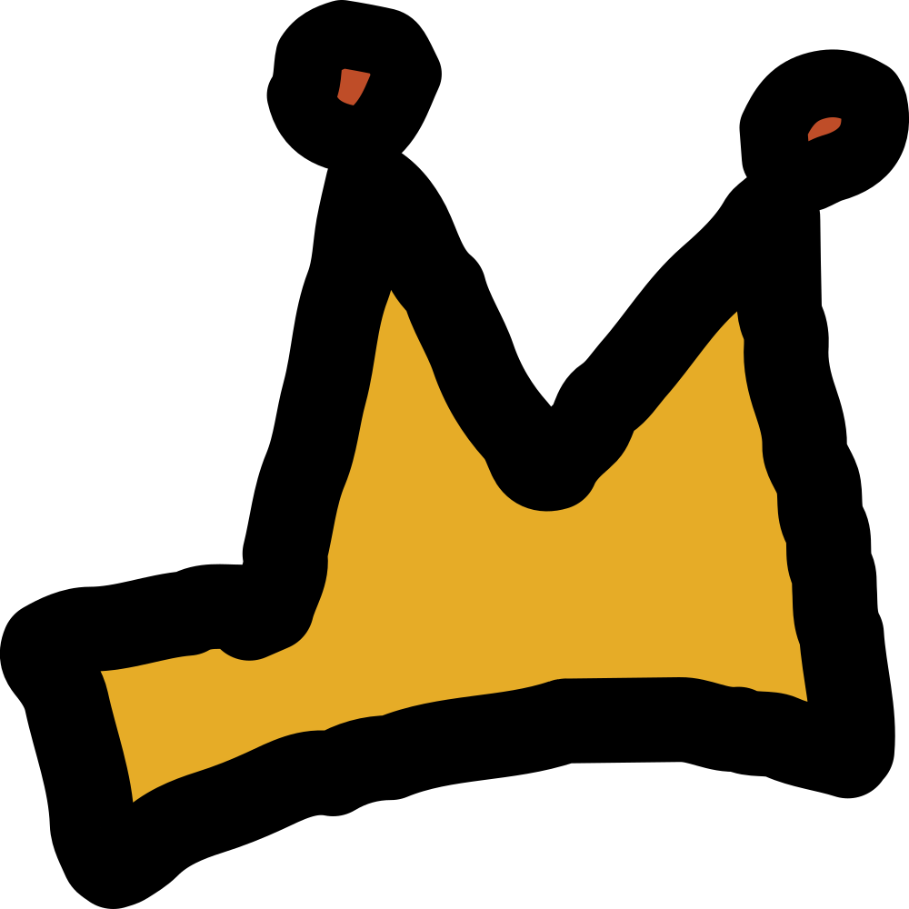
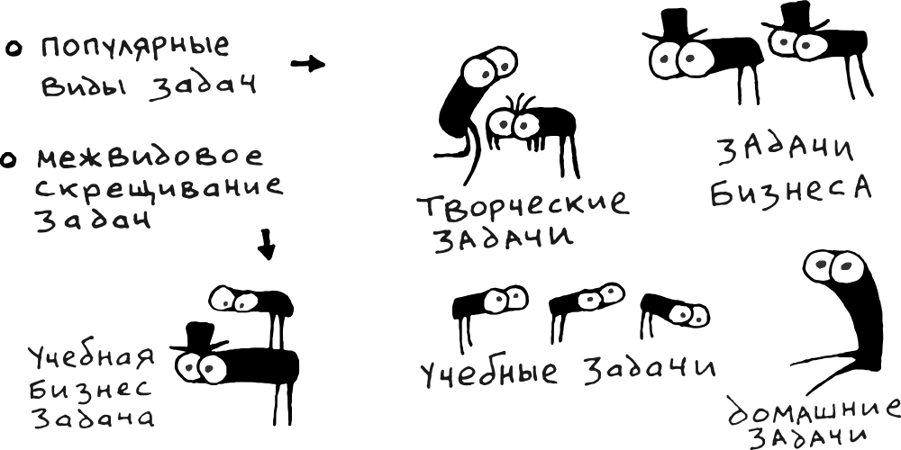
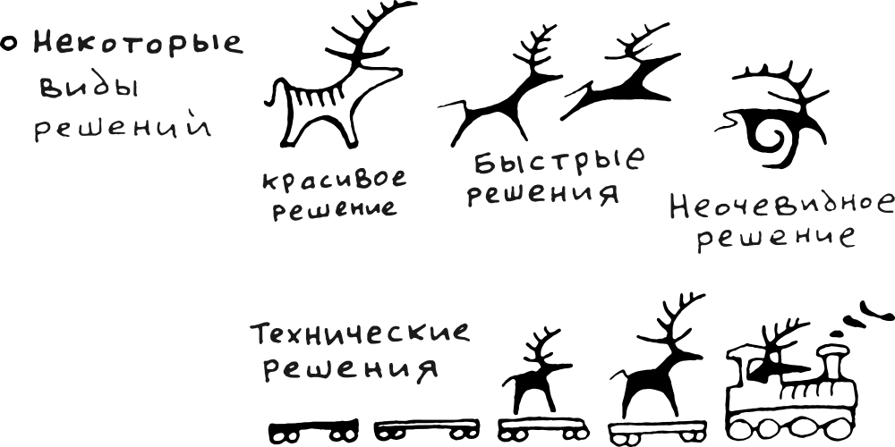
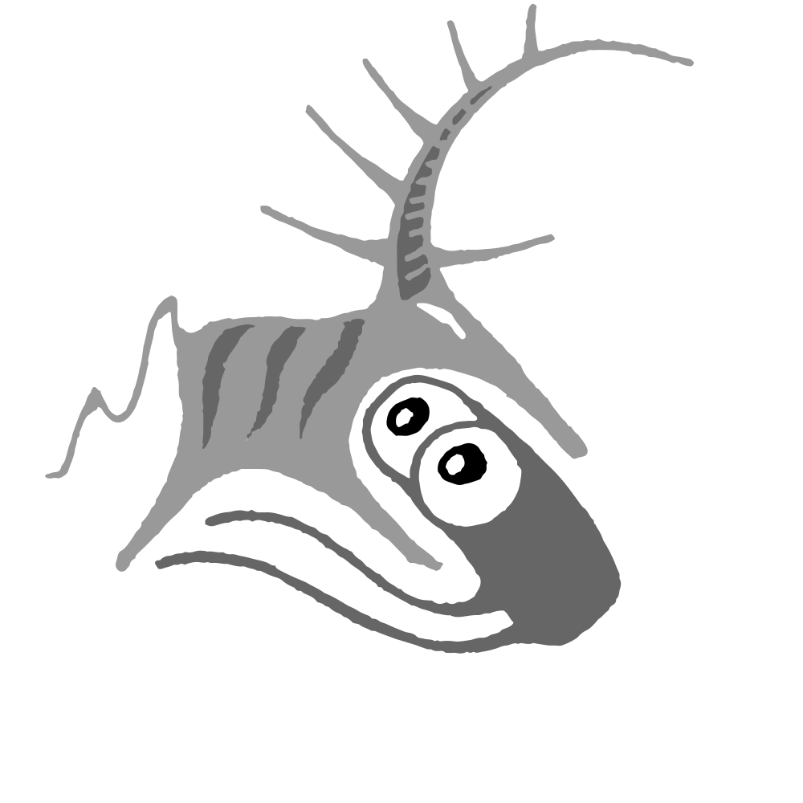
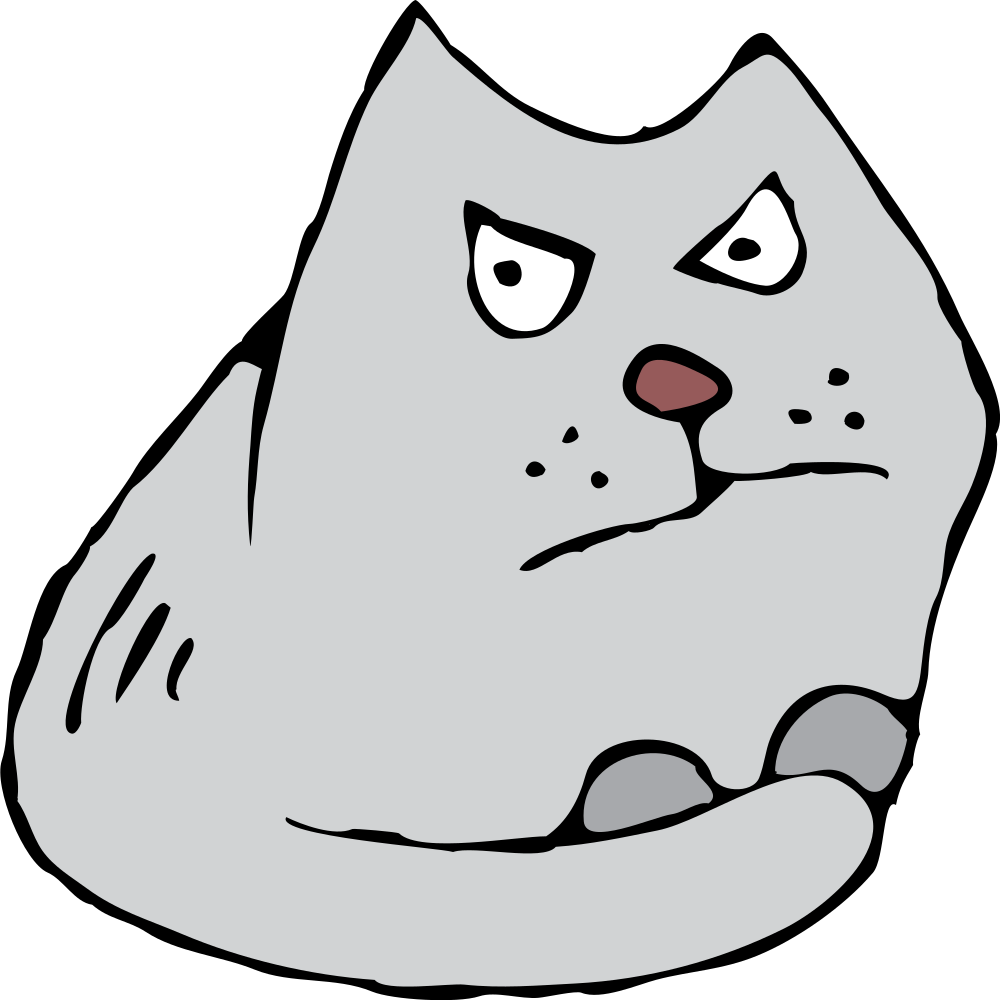
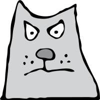

Было дело, гулял молодой король вокруг вулкана Таупо. Из вулкана выливались потоки горячей лавы и струи чёрного пепела вырывались вверх до самого неба. Это извержение в энциклопедии назвали извержением Оруануи. Гулять рядом с вулканом было опасно, но храбрый король продолжал прогулки пока лично не проверил всё написанное в энциклопедии.
Встретил чёрного орла. Тот был чёрный от мрачных мыслей и шёл прыгать в жерло вулкана. Причиной был недавний спор с дятлом у кого клюв крепче. Дятел предложил испытание и выиграл спор. А орёл во время испытания сломал себе клюв. Потерял вместе с клювом всякую надежду на счастливую жизнь.
Король выслушал беду и отломал кусок королевской короны. Смастерил из куска новый орлиный клюв. Хороший получился клюв — ¹) красивый,²) удобный,³) прочный. Орёл обрадовался и жили они долго и счастливо.

Легенда помогла короне стать узнаваемым символом в обществе. А связи с королём сделали корону главным логотипом этого мира.
Символ отправился в северо-западный угол экрана - это традиционное место для логотипов. Забравшись в угол, символ захватил контроль над навигационным меню.
Этот поступок, одобренный королём, изрядно рассердил уважаемую иконку по прозвищу Гамбургер, чьи предки контролировали меню долгое время. Гамбургер поднял восстание, но сил хватило только на завоевание небольшой области в восточной части.
Смирившись со своим положением, Гамбургер поселился на завоёванных землях и занялся производством драмы для повествования. А в свободное от набегов время составил описание мира.
Описание мира
Наши дни
У основы мира живут задачи. Никто не знает как они выглядят, но возможно у них большие глаза и цепкие лапки.

Задач очень много и все разного размера. От крохотных задачек — эти совсем не опасные, вот только назойливо летают вокруг и пищат: «Сделай меня! Сделай меня сейчас, потом опять забудешь...» До огромных супер-сверх-важных задач, которые могут внезапно нависнуть сверху и молча раздавить своей тяжестью.
Задачи с самого рождения скитаются по миру в поисках решений.

Решений тоже много и они буквально лежат под ногами. Но не каждое решение подходит к каждой задаче. Порой поиски друг-друга могут продолжаться годами. А когда задача находит подходящее решение, они сливаются в танце и рождают результат.
Буквально только что произошёл такой случай: одна молодая задачка по имени «Объяснить слияние задач с решениями» затанцевала с красивым решением по имени «Придумать и описать пример». Этот параграф текста и его вертящаяся сестрёнка неподалёку — оба родились в чудесном танце слияния.

Так рождаются все жители этого мира. Внутри каждого есть задача, чаще несколько задач одновременно, и такое же количество решений. Если количество не совпадает, то меняется характер — нерешённые задачи повышают активность, а невостребованные решения, наоборот, склоняют к ленивому образу жизни.
Все жители растут, когда поедают новые задачи с решениями. Одна из самых вкусных задач называется «Визуальный образ». Тот, кто съест такую задачу и закусит подходящим решением, станет видимым. Вот, например, здравствуйте...

Это браузер. Вполне себе настоящий. Если сейчас что-то сломалось, это он виноват. Полное имя:
Этот браузер очень похож на кота. Настолько похож, что, скорее всего, он кот.
Взгляд кота настолько выразителен, что, скорее всего, он что-то выражает. Скорее всего, у кота есть свои задачи в поисках своих решений. Очень вероятно, что кот как-то делает свои задачи.
Чтобы понимать кота и других жителей этого мира, стоит посмотреть на мир изнутри...
<H1>
Изнутри мир выглядит примерно так.
</H1>
<P>
В бескрайнем пространстве живёт множество зелёных букашек-символов. Символы объединяются в слова и строки. Некоторые из них выстраиваются в обычный текст, который можно прочесть.
</P>
<P>
Другие комбинации символов странные — их читает браузер. Кстати, этот кот опять здесь...
</P>

<FIGURE CLASS="side-illustration">
<IMG SRC="art/characters/this-cat.svg">
</FIGURE>
<P>
Зелёные символы из этого мира читают все: и люди, и разные браузеры, и настоящие роботы. Скорее всего, этот мир читают даже коты.
</P>
<P>
Поэтому сообща придумали общий язык, который каждый прочитает и поймёт. В языке перемешаны обычные слова, команды, описания, картинки и всё что угодно. Можно добавить даже видеотрансляцию с Юпитера в прямом эфире с космическими тюленями и субтитрами клинописью. Только где взять такую трансляцию.
</P>
<P>
Когда придумали язык, зелёные букашки-символы объединились в <CODE>код</CODE>. Вместе с языком, придумали огромную кучу правил для разных задач — чем сложнее задача, тем сложнее правила. Порой, при взгляде на код, кажется что зелёные букашки посходили с ума. Взгляните сами:
</P>
<FIGURE CLASS="illustration">
<FIGCAPTION>
Пример сложной задачи: Четверть одного кадра из юпитерской трансляции
</FIGCAPTION>
Описание мира
Наши дни
Со времён легенды орёл улетел, а вулкан притих.
Вместо лавы и пепла, из вулкана в новом мире извергаются задачи.
Все задачи очень разные, от крохотных задачек — эти совсем не опасные, вот только назойливо летают вокруг и пищат: «Сделай меня, сделай меня...» До огромных супер-сверх-важных задач, которые могут внезапно нависнуть сверху и молча раздавить своей тяжестью.
Нескончаемым роем задачи вылетают из жерла вулкана и разлетаются по миру в поисках решений.
Решения разбросаны по всему миру и буквально валяются под ногами.
Когда задача и подходящее решение находят друг-друга, они сливаются в едином танце и порождают результат. Буквально только что произошёл такой случай: одна молодая задачка по имени «Объяснить слияние задач с решениями» затанцевала с красивым решением по имени «Придумать и описать пример». Этот параграф текста и его вертящаяся сестрёнка неподалёку — оба родились в чудесном танце слияния.
Вот ещё один пример, каким бывает результат объединения задач и решений:
Этот результат очень похож на кота. Настолько похож, что, скорее всего, он кот.
Взгляд кота настолько выразителен, что, скорее всего, он что-то выражает. Скорее всего, у кота есть свои задачи в поисках своих решений. Очень вероятно, что кот как-то делает свои задачи.
Чтобы понимать кота и других жителей этого мира, стоит посмотреть на мир изнутри:
<H1>
Изнутри мир выглядит примерно так.
</H1>
<P>
В бескрайнем пространстве живёт множество зелёных букашек-символов. Символы объединяются в слова и строки. Некоторые из них выстраиваются в обычный текст, который можно прочесть.
</P>
<P>
Другие комбинации символов странные — их читает браузер. Кстати, этот кот опять здесь...
</P>
<FIGURE CLASS="side-illustration">
<IMG SRC="art/characters/this-cat.svg">
</FIGURE>
<P>
Зелёные символы из этого мира читают все: и люди, и разные браузеры, и настоящие роботы. Скорее всего, этот мир читают даже коты.
</P>
<P>
Поэтому сообща придумали общий язык, который каждый прочитает и поймёт. В языке перемешаны обычные слова, команды, описания, картинки и всё что угодно. Можно добавить даже видеотрансляцию с Юпитера в прямом эфире с космическими тюленями и субтитрами клинописью. Только где взять такую трансляцию.
</P>
<P>
Когда придумали язык, зелёные букашки-символы объединились в <CODE>код</CODE>. Вместе с языком, придумали огромную кучу правил для разных задач — чем сложнее задача, тем сложнее правила. Порой, при взгляде на код, кажется что зелёные букашки посходили с ума. Взгляните сами:
</P>
<FIGURE CLASS="illustration">
<FIGCAPTION>
Пример сложной задачи: Четверть одного кадра из юпитерской трансляции
</FIGCAPTION>
<BLOCKQUOTE>
— Хватит уже! — возмутился король Апп зелёным букашкам, — Что вы себе позволяете? Вы такие сложные, что убирайтесь в другое место. Оставьте пометку в коде, куда именно уходите.
<A HREF="jupiter-report-part0001.svg">
Мы обязательно посмотрим.
</A> Досвидания!
</BLOCKQUOTE>
Король Апп следит за порядком в коде. Чтобы непонятные букашки не мешали искать ошибки, и чтобы рождалось новое содержание...
{kind=link}